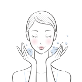
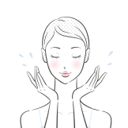

日々のメイクや紫外線、乾燥…
肌は様々なストレスにさらされています。
そんな肌を優しく守りながら、しっかりメイクを落とすクレンジングをお探しですか？
- 乾燥肌で、クレンジングで
肌がつっぱってしまう… - 敏感肌で、刺激の少ない
クレンジングを探している… - 自然由来の成分で、
環境に優しい商品がいいな… - 最近なんだか毛穴汚れが
気になってきた…
そんなお悩みをお持ちの方へ
kiki ORAGANIC
クリームクレンジング
植物由来の成分で肌に負担をかけずにメイクを落とす、肌に優しいクレンジングです。
- うるおい
つづく - しっとり
なめらか - もっちり
やわらか
point
ポイント
01
メイクだけでなく毛穴の汚れもすっきり
肌に優しく馴染むクリームが、メイクだけでなく毛穴の奥の汚れまでしっかり落とします。洗い上がりはしっとりもちもちで、乾燥知らずの肌へ導きます。
02
100%天然由来の成分
敏感肌にも安心
オーガニッククリームクレンジングは、100%天然由来の成分で作られています。石油系合成界面活性剤や鉱物油、合成香料、合成着色料は一切使用していないので、敏感肌の方でも安心してご使用いただけます。
03
環境にも優しい成分を使用しています
オーガニッククリームクレンジングは、生分解性の高い成分を使用しているので、環境にも優しいクレンジングです。自社農園で作るハーブを贅沢に取り入れた製品となっております。
Voice
お客様の声
「今まで使用した中で、一番肌に優しいクレンジングです。」
肌に優しく馴染むクリームが、メイクだけでなく毛穴の奥の汚れまでしっかり落とします。洗い上がりはしっとりもちもちで、乾燥知らずの肌へ導きます。
Aさん
「洗い上がりがしっとりもちもちで、乾燥知らずになりました。」
乾燥肌に悩んでいましが、オーガニッククリームクレンジングを使い始めてから、肌の乾燥が改善し、もちもち肌になりました。
Kさん
「こちらのクレンジングを使い始めてから、肌トラブルが減りました。」
年齢とともに、肌が乾燥しやすくなってきたので、肌に優しいクレンジングを探していました。メイクもするっと落ちるので、とても気に入っています。
Mさん
how to use
ご使用方法
01

適量を手に取り、円を描きながら、メイクに馴染ませます。
02

メイクとよく馴染んだら、水かぬるま湯で洗い流します。
美しい肌は、自然の恵みから
肌に必要な潤いを残しながらメイクを落とすので、
洗い上がりはしっとり、もちもち。
- kiki ORGANIC
- クリームクレンジング
- 200g 3,200円 （税込）